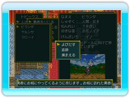
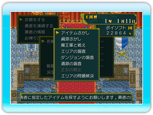

10 |
勇者をいじる |
 |
王様は、勇者に対していろいろな方法で関与することができます。王様が勇者に対して実行できるコマンドには、以下のものがあります。  ◆よびだす 勇者をお城によんで、仕事を依頼します。 ◆追跡 勇者のあとをつけて、その勇者の情報を手に入れます。 ◆捕まえる 勇者を捕まえて、牢屋に入れておきます。 捕まえた勇者は捕虜になり、勇者の持っていたアイテムは全て国のものになります。 よびだした勇者について よびだした勇者がお城に到着すると登城イベントが発生して、仕事を依頼することができます。依頼の内容と報酬を決定して勇者に依頼しますが、勇者が依頼内容や報酬に納得しない場合は、断られることもあります。 勇者に依頼できる仕事には、以下のものがあります。  ◆アイテムさがし アイテムを探してきてもらいます。 ◆資源さがし エリアに眠っている資源を探してきてもらいます。 ◆魔王軍と戦え 魔王軍と戦闘をしてもらいます。 解放されたエリアは、空白地になります。 ◆エリアの調査 他国のエリアの情報を入手してもらいます。 ◆ダンジョンの調査 ダンジョンの調査をしてもらいます。 調査中に勇者はモンスターと戦闘をして、経験値を手に入れます。 ◆遺跡の調査 遺跡の調査をしてもらいます。 調査中に勇者はモンスターと戦闘をして、経験値を手に入れます。 ◆王女の救出 王女がさらわれた場合、救出してもらいます。 ◆エリアの問題解決 エリアで起きている問題を解決してもらいます。 登城イベント画面で「勇者を捕縛する」を選択すれば、その場で勇者を捕まえることができます。また「勇者の情報」でその勇者の情報をチェックすることができ、「お帰り頂く」を選択すると、なにもせず勇者に帰ってもらいます。 |
 |
 |
 |